Materi Pertemuan 3 — Data Preparation (Extensi)#
Studi Kasus: Iris + Data Campuran (Mixed-Type)#
Daftar Isi#
Klik untuk membuka Daftar Isi
Persiapan Lingkungan
Memuat Dataset Iris
Penjelasan: Fitur vs Kelas (Target)
Identifikasi Missing Value (Lebih Lengkap)
Statistik Deskriptif
Cara Menarik Data dari Database (MySQL/PostgreSQL) ke Orange
Cara Mengukur Jarak untuk Data Iris
Distance Matrix di Orange (Workflow)
Checklist Output Pertemuan 3 (Untuk Laporan)
Bukti Gambar Dataset dan Workflow Orange
Dokumen ini melanjutkan materi Data Preparation (CRISP-DM) yang kamu buat sebelumnya, lalu ditambah:
Identifikasi missing value (lebih lengkap)
Statistik deskriptif per kelas, kolom, dan fitur
Cara tarik data dari MySQL/PostgreSQL ke Orange
Penjelasan fitur vs kelas (contoh Iris)
Cara mengukur jarak (distance) & distance matrix di Orange
Imputasi missing value menggunakan KNN pada data numerik (Iris)
Imputasi missing value menggunakan KNN pada data campuran (Bank)
Perhitungan manual langkah demi langkah + verifikasi Python
Bukti gambar hasil notebook (pemeriksaan missing value, tabel jarak, hasil imputasi)
Cara menghitung jarak total menggunakan Excel (rumus lengkap)
1) Persiapan Lingkungan#
Kita pakai Python untuk contoh analisis (missing value, statistik deskriptif, distance).
%matplotlib inline
import pandas as pd
import numpy as np
import matplotlib.pyplot as plt
from sklearn.preprocessing import StandardScaler
from sklearn.metrics import pairwise_distances
2) Memuat Dataset Iris#
df = pd.read_csv("IRIS.csv")
df.head()
3) Penjelasan: Fitur vs Kelas (Target)#
Pada dataset Iris:
Fitur (features) = kolom input/karakteristik bunga:
sepal_length,sepal_width,petal_length,petal_width
Kelas (class/label/target) = kategori yang ingin diprediksi:
species(misal: Iris-setosa, Iris-versicolor, Iris-virginica)
✅ Jadi sepal/petal itu fitur, sedangkan virginica/versicolor/setosa itu kelas.
Kalau kamu membuat kolom
species_encoded, itu hanya versi numerik dari kelas.
4) Identifikasi Missing Value (Lebih Lengkap)#
Selain isnull().sum(), kita juga cek:
Persentase missing per kolom
Baris mana yang punya missing
4.1 Jumlah missing per kolom#
missing_count = df.isnull().sum()
missing_count
4.2 Persentase missing per kolom#
missing_percent = (df.isnull().mean() * 100).round(2)
pd.DataFrame({'missing_count': missing_count, 'missing_%': missing_percent})
4.3 Baris yang memiliki missing (jika ada)#
rows_with_missing = df[df.isnull().any(axis=1)]
rows_with_missing.head()
5) Statistik Deskriptif#
Target tugas: statistik deskriptif untuk:
Setiap kolom/fitur (overall)
Setiap kelas (group by
species)Ringkasan untuk data kategorikal (frekuensi kelas)
5.1 Statistik deskriptif overall (fitur numerik)#
numeric_cols = ['sepal_length','sepal_width','petal_length','petal_width']
df[numeric_cols].describe().T
5.2 Frekuensi tiap kelas#
df['species'].value_counts()
5.3 Statistik deskriptif per kelas (lengkap)#
df.groupby('species')[numeric_cols].describe()
5.4 Statistik per kelas (ringkas: mean, std, min, max)#
df.groupby('species')[numeric_cols].agg(['mean','std','min','max']).round(3)
6) Cara Menarik Data dari Database (MySQL/PostgreSQL) ke Orange#
Orange bisa ambil data langsung dari DB melalui widget SQL Table (atau add-on yang mendukung koneksi DB).
6.1 Langkah Umum (Workflow Orange)#
Buka Orange
Tambahkan widget: SQL Table
Pilih tipe DB: MySQL atau PostgreSQL
Isi koneksi: host, port, database, user, password
Pilih tabel atau tulis query SQL
Sambungkan ke widget lain: Data Table, Select Columns, Impute, Normalize, dll
6.2 Contoh Parameter Koneksi#
MySQL
Host:
localhostPort:
3306Database:
nama_dbUser:
root(atau user lain)
PostgreSQL
Host:
localhostPort:
5432Database:
nama_dbUser:
postgres(atau user lain)
6.3 Contoh Query#
SELECT sepal_length, sepal_width, petal_length, petal_width, species
FROM iris
WHERE sepal_length IS NOT NULL;
Kalau widget SQL Table belum ada: buka Options → Add-ons, lalu install add-on yang mendukung database/SQL.
7) Cara Mengukur Jarak untuk Data Iris#
Karena fitur Iris numerik, jarak yang umum dipakai:
Euclidean (umum)
Manhattan
Minkowski
⚠️ Penting: lakukan scaling sebelum menghitung jarak.
7.1 Scaling#
X = df[numeric_cols].copy()
scaler = StandardScaler()
X_scaled = scaler.fit_transform(X)
X_scaled[:5]
7.2 Distance Matrix (Euclidean)#
D_euclid = pairwise_distances(X_scaled, metric='euclidean')
D_euclid[:5, :5]
8) Distance Matrix di Orange (Workflow)#
File (atau SQL Table) → load data
Select Columns → pastikan fitur numerik masuk ke Attributes,
speciesjadi Class(Opsional) Normalize → Standardize/Normalize
Distances → pilih metric (Euclidean/Manhattan/Cosine)
Output ke Distance Matrix / Heat Map / Hierarchical Clustering
9) Checklist Output Pertemuan 3 (Untuk Laporan)#
Bukti cek missing value (count + persen)
Statistik deskriptif: overall dan per kelas
Penjelasan fitur vs kelas (Iris)
Langkah tarik data DB ke Orange (MySQL/PostgreSQL)
Cara hitung jarak Iris + scaling
Distance matrix di Orange
Imputasi KNN pada data numerik (Iris) — perhitungan manual + kode
Imputasi KNN pada data campuran (Bank) — perhitungan manual + kode
Bukti gambar dari Orange dan PostgreSQL
Bukti gambar hasil notebook (cek missing value, tabel jarak, hasil imputasi)
Cara perhitungan jarak total menggunakan Excel
10) Bukti Gambar Dataset dan Workflow Orange#
10.1 Workflow Pengukuran Jarak Dataset Iris di Orange#
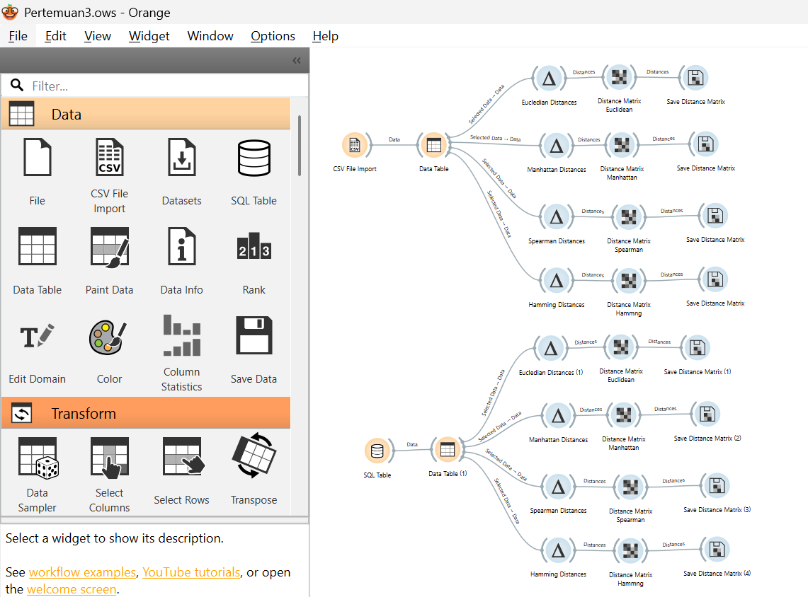
Workflow Orange untuk dataset Iris dimulai dari CSV File Import, dilanjutkan ke Data Table, kemudian ke widget perhitungan jarak (Euclidean Distances, Manhattan Distances, Spearman Distances, Hamming Distances), lalu ditampilkan pada Distance Matrix dan disimpan melalui Save Distance Matrix.
10.2 Bukti Data CSV ke PostgreSQL#
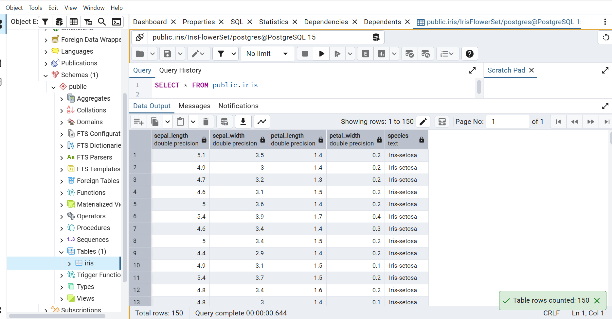
Dataset Iris telah berhasil dimasukkan ke PostgreSQL dan dapat diakses melalui query SELECT * FROM public.iris. Total data: 150 baris.
10.3 Histogram Fitur Iris — Sebelum Scaling#
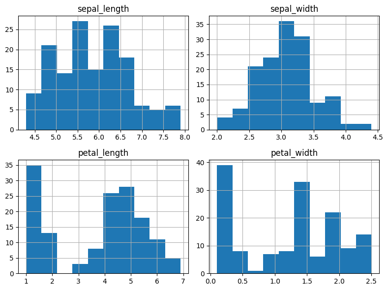
Histogram di atas menunjukkan distribusi keempat fitur numerik (sepal_length, sepal_width, petal_length, petal_width) sebelum dilakukan scaling. Terlihat bahwa skala antar fitur berbeda-beda.
10.4 Histogram Fitur Iris — Sesudah Scaling#
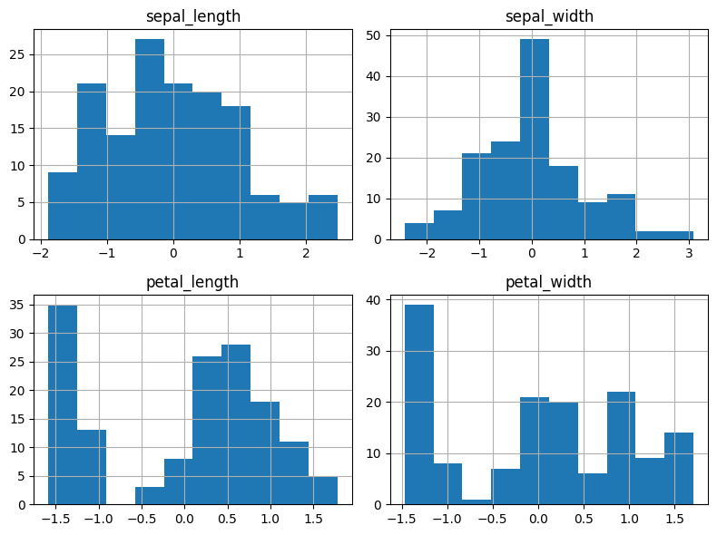
Setelah dilakukan StandardScaler, distribusi keempat fitur sudah dinormalisasi dengan mean ≈ 0 dan std ≈ 1, sehingga skala antar fitur menjadi setara untuk perhitungan jarak.
11) Konsep KNN untuk Mengisi Missing Value#
11.1 Apa itu KNN Imputation?#
KNN Imputation adalah metode untuk mengisi nilai yang hilang (missing value) dengan cara:
Mengukur jarak dari baris yang memiliki missing value ke semua baris lain
Memilih k baris terdekat (tetangga terdekat)
Mengisi missing value berdasarkan nilai dari tetangga terdekat tersebut
11.2 Aturan Pengisian#
Tipe Nilai yang Hilang |
Cara Pengisian |
Metode |
|---|---|---|
Numerik |
Rata-rata dari k tetangga terdekat |
KNN Regression |
Kategorikal |
Modus (voting mayoritas) dari k tetangga |
KNN Classification |
Pada pertemuan ini digunakan KNN Regression karena nilai yang diisi berupa angka.
11.3 Catatan Penting#
Jika satu kolom memiliki missing value, maka kolom tersebut tidak diikutkan dalam perhitungan jarak
Contoh: jika kolom ke-4 kosong, maka jarak hanya dihitung dari kolom 1, 2, dan 3
Setelah jarak dihitung, diambil k data terdekat (pada contoh ini k = 3)
12) Aturan Menghitung Jarak Berdasarkan Tipe Data#
12.1 Jarak untuk Data Numerik — Euclidean Distance#
Untuk data numerik digunakan Euclidean Distance:
Aturan: Jika ada kolom yang missing, kolom tersebut dilewati dan tidak masuk perhitungan.
Contoh: Baris A = [5.4, 3.9, 1.7, ?] dan Baris B = [5.1, 3.5, 1.4, 0.2]
Karena kolom ke-4 kosong, jarak hanya dihitung dari 3 kolom pertama:
12.2 Konversi Data Ordinal ke Numerik#
Data ordinal memiliki urutan (ranking), tetapi tidak bisa langsung dimasukkan ke Euclidean. Harus diubah dulu menjadi numerik menggunakan rumus:
Keterangan:
\(r\) = urutan level ordinal (dimulai dari 1)
\(m\) = jumlah seluruh level
Contoh: Kolom education memiliki 3 level:
Level |
Urutan (\(r\)) |
Hasil Konversi |
|---|---|---|
primary |
1 |
\((1-1)/(3-1) = 0\) |
secondary |
2 |
\((2-1)/(3-1) = 0.5\) |
tertiary |
3 |
\((3-1)/(3-1) = 1\) |
Setelah dikonversi, kolom ordinal bisa digabungkan dengan data numerik lain dan dihitung menggunakan Euclidean distance.
12.3 Jarak untuk Data Kategorikal#
Untuk data kategorikal (nominal) digunakan rumus ketidaksamaan:
Keterangan:
\(P\) = banyaknya kolom kategorikal yang dibandingkan
\(M\) = jumlah kolom yang nilainya sama
Contoh: Dibandingkan 3 kolom kategorikal (marital, housing, loan):
Kolom |
Baris A |
Baris B |
Sama? |
|---|---|---|---|
marital |
single |
single |
✓ |
housing |
yes |
yes |
✓ |
loan |
yes |
no |
✗ |
Maka \(P = 3\), \(M = 2\) (dua kolom sama):
12.4 Jarak Total untuk Data Campuran#
Untuk data campuran, langkah-langkahnya adalah:
Hitung jarak numerik + ordinal → konversi ordinal ke numerik, lalu hitung Euclidean
Hitung jarak kategorikal → gunakan rumus \((P-M)/P\)
Jumlahkan keduanya sebagai jarak total
Inilah inti dari perhitungan jarak pada data campuran: ordinal dijadikan numerik → dihitung Euclidean, kategorikal dihitung sendiri → lalu keduanya dijumlahkan.
13) Penerapan KNN Imputation pada Dataset Iris (Data Numerik)#
Dataset Iris seluruhnya numerik (kecuali kolom species), sehingga perhitungan jarak menggunakan Euclidean distance saja.
13.1 Cek Missing Value Awal#
Dataset Iris asli tidak memiliki missing value, sehingga perlu dibuat missing value buatan untuk simulasi.
13.2 Membuat Missing Value Buatan#
Nilai yang dihilangkan:
Baris indeks 5 (baris ke-6)
Kolom
petal_width
Data asli baris 5:
sepal_length |
sepal_width |
petal_length |
petal_width |
species |
|---|---|---|---|---|
5.4 |
3.9 |
1.7 |
0.4 |
Iris-setosa |
Setelah dihilangkan:
sepal_length |
sepal_width |
petal_length |
petal_width |
species |
|---|---|---|---|---|
5.4 |
3.9 |
1.7 |
? |
Iris-setosa |
Karena petal_width kosong, maka jarak dihitung hanya dari 3 kolom: sepal_length, sepal_width, petal_length.
13.3 Perhitungan Jarak Manual (Euclidean)#
Berikut perhitungan jarak dari baris 5 ke beberapa baris lain:
Baris 5 vs Baris 0#
Baris 0: [5.1, 3.5, 1.4]
Baris 5 vs Baris 1#
Baris 1: [4.9, 3.0, 1.4]
Baris 5 vs Baris 2#
Baris 2: [4.7, 3.2, 1.3]
Baris 5 vs Baris 3#
Baris 3: [4.6, 3.1, 1.5]
Baris 5 vs Baris 4#
Baris 4: [5.0, 3.6, 1.4]
Perhitungan yang sama dilakukan untuk seluruh 149 baris lainnya.
13.4 Menentukan 3 Tetangga Terdekat (k = 3)#
Setelah seluruh jarak dihitung dan diurutkan dari terkecil, diperoleh 3 tetangga terdekat:
Peringkat |
Baris |
Jarak |
Data (SL, SW, PL) |
petal_width |
|---|---|---|---|---|
1 |
Baris 10 |
0.2828 |
[5.4, 3.7, 1.5] |
0.2 |
2 |
Baris 48 |
0.3000 |
[5.3, 3.7, 1.5] |
0.2 |
3 |
Baris 18 |
0.3162 |
[5.7, 3.8, 1.7] |
0.3 |
Verifikasi manual baris 5 vs baris 10:
Baris 10: [5.4, 3.7, 1.5]
13.5 Imputasi Missing Value (KNN Regression)#
Karena nilai yang diisi berupa numerik, digunakan rata-rata dari petal_width ketiga tetangga:
Hasil: Missing value petal_width pada baris 5 diisi dengan \(\boxed{0.2333}\)
Nilai asli sebelum dihilangkan: 0.4
13.6 Kode Python — Imputasi KNN pada Iris#
import pandas as pd
import numpy as np
# Load data
iris = pd.read_csv("IRIS.csv")
# Simpan nilai asli sebelum dihilangkan
target_idx = 5
col_missing = 'petal_width'
nilai_asli = iris.loc[target_idx, col_missing]
# Buat missing value buatan
iris_knn = iris.copy()
iris_knn.loc[target_idx, col_missing] = np.nan
# Fitur yang dipakai untuk menghitung jarak (tanpa kolom yang missing)
fitur = ['sepal_length', 'sepal_width', 'petal_length']
# Hitung jarak ke semua baris lain
hasil_jarak = []
for i in range(len(iris_knn)):
if i == target_idx:
continue
d = np.sqrt(((iris_knn.loc[target_idx, fitur] - iris_knn.loc[i, fitur]) ** 2).sum())
hasil_jarak.append((i, d, iris.loc[i, col_missing]))
# Urutkan berdasarkan jarak terkecil
hasil_jarak = sorted(hasil_jarak, key=lambda x: x[1])
# Ambil 3 tetangga terdekat
k = 3
tetangga = hasil_jarak[:k]
# Imputasi dengan rata-rata (KNN Regression)
imputasi = np.mean([x[2] for x in tetangga])
print("Nilai asli petal_width:", nilai_asli)
print("\n3 tetangga terdekat:")
for t in tetangga:
print(f" Baris {t[0]}: jarak = {t[1]:.4f}, petal_width = {t[2]}")
print(f"\nHasil imputasi KNN (k=3): {imputasi:.4f}")
Output yang diharapkan:
Nilai asli petal_width: 0.4
3 tetangga terdekat:
Baris 10: jarak = 0.2828, petal_width = 0.2
Baris 48: jarak = 0.3000, petal_width = 0.2
Baris 18: jarak = 0.3162, petal_width = 0.3
Hasil imputasi KNN (k=3): 0.2333
13.7 Bukti Pemeriksaan Missing Value — Dataset Iris#
Berikut adalah bukti grafik yang dihasilkan notebook saat memeriksa missing value pada dataset Iris sebelum dibuat missing value buatan:
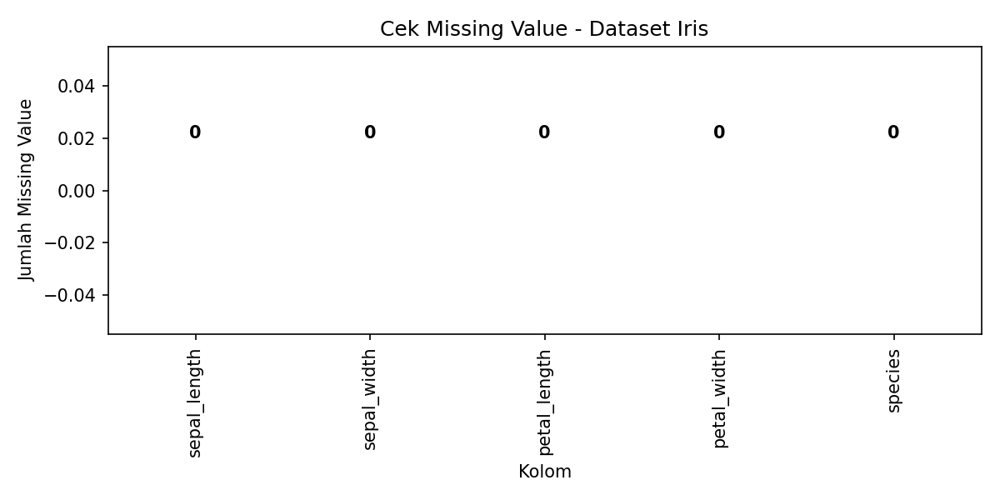
Penjelasan:
Grafik bar menunjukkan jumlah missing value per kolom pada dataset Iris.
Seluruh kolom bernilai 0 — artinya dataset Iris asli tidak memiliki missing value sama sekali.
Karena tidak ada missing value, maka dibuat missing value buatan pada baris 5 kolom
petal_widthuntuk keperluan simulasi KNN Imputation.
13.8 Bukti Baris dengan Missing Value Buatan — Iris#
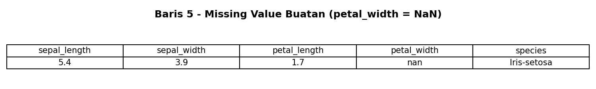
Tabel di atas menunjukkan bahwa baris 5 kini memiliki petal_width = NaN (missing), sementara kolom lainnya tetap utuh. Kolom petal_width inilah yang akan diisi menggunakan KNN Imputation.
13.9 Bukti Tabel 10 Jarak Terkecil — Iris#

Penjelasan:
Tabel menampilkan 10 baris dengan jarak terkecil dari baris 5 (yang memiliki missing value).
Jarak dihitung menggunakan Euclidean Distance dari 3 kolom:
sepal_length,sepal_width,petal_length(kolompetal_widthtidak diikutsertakan karena missing).3 baris teratas (hijau) adalah tetangga terdekat yang terpilih (k = 3):
Baris 10: jarak = 0.2828, petal_width = 0.2
Baris 48: jarak = 0.3000, petal_width = 0.2
Baris 18: jarak = 0.3162, petal_width = 0.3
13.10 Bukti Hasil Imputasi KNN — Iris#
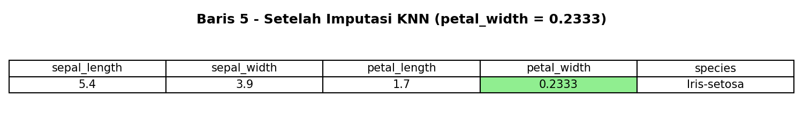
Penjelasan:
Setelah KNN Imputation dilakukan, kolom
petal_widthpada baris 5 terisi dengan nilai 0.2333.Nilai ini merupakan rata-rata dari
petal_widthketiga tetangga terdekat: \((0.2 + 0.2 + 0.3) / 3 = 0.2333\).Nilai asli sebelum dihilangkan: 0.4.
Ini membuktikan bahwa proses KNN Imputation berhasil mengisi missing value berdasarkan data tetangga terdekat.
14) Penerapan KNN Imputation pada Dataset Bank (Data Campuran)#
Dataset Bank merupakan data campuran karena memiliki kolom numerik, ordinal, dan kategorikal. Oleh karena itu, jarak tidak bisa langsung dihitung dengan Euclidean untuk semua kolom — setiap tipe data harus diperlakukan sesuai jenisnya.
14.1 Menentukan Tipe Variabel#
Kolom-kolom yang digunakan dalam perhitungan jarak:
Kolom |
Tipe Data |
Keterangan |
|---|---|---|
|
Numerik |
Usia nasabah |
|
Ordinal |
primary < secondary < tertiary |
|
Kategorikal |
married, single, divorced |
|
Kategorikal |
yes, no |
|
Kategorikal |
yes, no |
|
Numerik (target) |
Saldo — kolom yang akan diimputasi |
Karena balance berupa numerik, maka pengisian missing value menggunakan KNN Regression.
14.2 Membuat Missing Value Buatan#
Dataset Bank tidak memiliki missing value, sehingga dibuat satu missing value buatan:
Baris indeks 5
Kolom
balance
Data asli baris 5:
age |
education |
marital |
housing |
loan |
balance |
|---|---|---|---|---|---|
42 |
tertiary |
single |
yes |
yes |
0 |
Setelah dihilangkan:
age |
education |
marital |
housing |
loan |
balance |
|---|---|---|---|---|---|
42 |
tertiary |
single |
yes |
yes |
? |
Karena balance kosong, maka perhitungan jarak menggunakan kolom: age, education, marital, housing, loan.
14.3 Langkah 1 — Konversi Ordinal ke Numerik#
Kolom education (ordinal) dikonversi menjadi numerik:
Level |
\(r\) |
Hasil |
|---|---|---|
primary |
1 |
\((1-1)/(3-1) = 0\) |
secondary |
2 |
\((2-1)/(3-1) = 0.5\) |
tertiary |
3 |
\((3-1)/(3-1) = 1\) |
Baris 5 memiliki education = tertiary, maka nilai numeriknya = 1.0.
14.4 Langkah 2 — Normalisasi Data Numerik (Min-Max)#
Kolom age dinormalisasi agar skalanya setara dengan kolom ordinal:
Dari dataset Bank: age_min = 23, age_max = 60.
Baris 5: age = 42
14.5 Langkah 3 — Perhitungan Jarak Manual#
Sekarang kita hitung jarak baris 5 ke beberapa baris lain, dengan menggabungkan:
Jarak numerik + ordinal (Euclidean) dari kolom
agedaneducationJarak kategorikal dari kolom
marital,housing,loan
Baris 5 vs Baris 21#
Baris 21: age=43, education=tertiary, marital=single, housing=yes, loan=no
Numerik + Ordinal:
Kategorikal:
Kolom |
Baris 5 |
Baris 21 |
Sama? |
|---|---|---|---|
marital |
single |
single |
✓ |
housing |
yes |
yes |
✓ |
loan |
yes |
no |
✗ |
\(P = 3\), \(M = 2\):
Jarak Total:
Baris 5 vs Baris 96#
Baris 96: age=30, education=tertiary, marital=single, housing=yes, loan=yes
Numerik + Ordinal:
Kategorikal:
Kolom |
Baris 5 |
Baris 96 |
Sama? |
|---|---|---|---|
marital |
single |
single |
✓ |
housing |
yes |
yes |
✓ |
loan |
yes |
yes |
✓ |
\(P = 3\), \(M = 3\):
Jarak Total:
Baris 5 vs Baris 51#
Baris 51: age=39, education=tertiary, marital=divorced, housing=yes, loan=yes
Numerik + Ordinal:
Kategorikal:
Kolom |
Baris 5 |
Baris 51 |
Sama? |
|---|---|---|---|
marital |
single |
divorced |
✗ |
housing |
yes |
yes |
✓ |
loan |
yes |
yes |
✓ |
\(P = 3\), \(M = 2\):
Jarak Total:
Baris 5 vs Baris 76#
Baris 76: age=39, education=tertiary, marital=married, housing=yes, loan=yes
Numerik + Ordinal:
Kategorikal:
Kolom |
Baris 5 |
Baris 76 |
Sama? |
|---|---|---|---|
marital |
single |
married |
✗ |
housing |
yes |
yes |
✓ |
loan |
yes |
yes |
✓ |
\(P = 3\), \(M = 2\):
Jarak Total:
Baris 5 vs Baris 13#
Baris 13: age=46, education=tertiary, marital=single, housing=yes, loan=no
Numerik + Ordinal:
Kategorikal:
Kolom |
Baris 5 |
Baris 13 |
Sama? |
|---|---|---|---|
marital |
single |
single |
✓ |
housing |
yes |
yes |
✓ |
loan |
yes |
no |
✗ |
\(P = 3\), \(M = 2\):
Jarak Total:
Perhitungan yang sama dilakukan untuk seluruh baris lainnya.
14.6 Menentukan 3 Tetangga Terdekat (k = 3)#
Setelah seluruh jarak dihitung dan diurutkan:
Peringkat |
Baris |
\(d_{num+ord}\) |
\(d_{kat}\) |
\(d_{total}\) |
balance |
|---|---|---|---|---|---|
1 |
Baris 96 |
0.3243 |
0 |
0.3243 |
880 |
2 |
Baris 21 |
0.0270 |
0.3333 |
0.3604 |
2067 |
3 |
Baris 51 |
0.0811 |
0.3333 |
0.4144 |
517 |
Perhatikan:
Baris 96 memiliki jarak numerik+ordinal besar (0.3243) tapi kategorikal semua sama (d_kat = 0), sehingga total jarak kecil
Baris 21 memiliki jarak numerik+ordinal kecil (0.0270) tapi ada 1 kolom kategorikal berbeda (d_kat = 0.3333)
Ini menunjukkan pentingnya memperhitungkan kedua tipe jarak pada data campuran.
14.7 Imputasi Missing Value (KNN Regression)#
Hasil: Missing value balance pada baris 5 diisi dengan \(\boxed{1154.67}\)
Nilai asli sebelum dihilangkan: 0
14.8 Kode Python — Imputasi KNN pada Data Campuran Bank#
import pandas as pd
import numpy as np
# Load data
bank = pd.read_csv("bank.csv")
# Simpan nilai asli sebelum dihilangkan
target_idx = 5
col_missing = 'balance'
nilai_asli = bank.loc[target_idx, col_missing]
# Buat missing value buatan
bank_knn = bank.copy()
bank_knn.loc[target_idx, col_missing] = np.nan
# === KONVERSI ORDINAL ===
edu_order = {'primary': 1, 'secondary': 2, 'tertiary': 3}
m_edu = 3
def ord_norm(val):
return (edu_order[val] - 1) / (m_edu - 1)
# Filter baris yang education-nya valid
bank_knn = bank_knn[bank_knn['education'].isin(edu_order.keys())].copy()
bank_knn = bank_knn.reset_index(drop=True)
# Cari ulang indeks target setelah reset
missing_idx = bank_knn[bank_knn[col_missing].isna()].index[0]
# === NORMALISASI NUMERIK (Min-Max) ===
age_min = bank_knn['age'].min()
age_max = bank_knn['age'].max()
def age_norm(val):
return (val - age_min) / (age_max - age_min)
# === PERHITUNGAN JARAK ===
cat_cols = ['marital', 'housing', 'loan']
hasil_jarak = []
for i in range(len(bank_knn)):
if i == missing_idx:
continue
# Jarak numerik + ordinal (Euclidean)
d_numord = np.sqrt(
(age_norm(bank_knn.loc[missing_idx, 'age']) - age_norm(bank_knn.loc[i, 'age']))**2 +
(ord_norm(bank_knn.loc[missing_idx, 'education']) - ord_norm(bank_knn.loc[i, 'education']))**2
)
# Jarak kategorikal
P = len(cat_cols)
M = sum(bank_knn.loc[missing_idx, c] == bank_knn.loc[i, c] for c in cat_cols)
d_cat = (P - M) / P
# Jarak total
d_total = d_numord + d_cat
bal = bank_knn.loc[i, col_missing]
if pd.isna(bal):
continue
hasil_jarak.append((i, d_total, d_numord, d_cat, bal))
# Urutkan berdasarkan jarak terkecil
hasil_jarak = sorted(hasil_jarak, key=lambda x: x[1])
# Ambil 3 tetangga terdekat
k = 3
tetangga = hasil_jarak[:k]
# Imputasi dengan rata-rata (KNN Regression)
imputasi = np.mean([x[4] for x in tetangga])
print("Nilai asli balance:", nilai_asli)
print("\n3 tetangga terdekat:")
for t in tetangga:
r = bank_knn.loc[t[0]]
print(f" Baris {t[0]}: d_total={t[1]:.4f} (d_numord={t[2]:.4f}, d_cat={t[3]:.4f}), balance={t[4]}")
print(f" age={r['age']}, edu={r['education']}, mar={r['marital']}, hou={r['housing']}, loan={r['loan']}")
print(f"\nHasil imputasi KNN (k=3): {imputasi:.2f}")
Output yang diharapkan:
Nilai asli balance: 0
3 tetangga terdekat:
Baris 96: d_total=0.3243 (d_numord=0.3243, d_cat=0.0000), balance=880
age=30, edu=tertiary, mar=single, hou=yes, loan=yes
Baris 21: d_total=0.3604 (d_numord=0.0270, d_cat=0.3333), balance=2067
age=43, edu=tertiary, mar=single, hou=yes, loan=no
Baris 51: d_total=0.4144 (d_numord=0.0811, d_cat=0.3333), balance=517
age=39, edu=tertiary, mar=divorced, hou=yes, loan=yes
Hasil imputasi KNN (k=3): 1154.67
14.9 Bukti Pemeriksaan Missing Value — Dataset Bank#
Berikut adalah bukti grafik yang dihasilkan notebook saat memeriksa missing value pada dataset Bank sebelum dibuat missing value buatan:
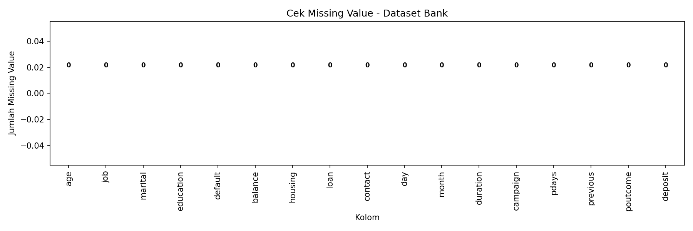
Penjelasan:
Grafik bar menunjukkan jumlah missing value per kolom pada dataset Bank (17 kolom).
Seluruh kolom bernilai 0 — artinya dataset Bank asli tidak memiliki missing value sama sekali.
Karena tidak ada missing value alami, maka dibuat missing value buatan pada baris 5 kolom
balanceuntuk simulasi KNN Imputation pada data campuran.
14.10 Bukti Baris dengan Missing Value Buatan — Bank#
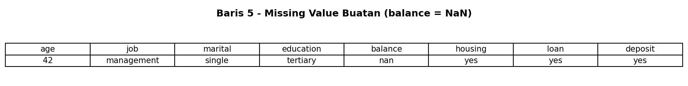
Tabel di atas menunjukkan data baris 5 setelah kolom balance dihilangkan (NaN). Kolom lain tetap utuh:
age = 42,job = management,marital = single,education = tertiary,housing = yes,loan = yes,deposit = yesKolom
balance= NaN → inilah yang akan diisi oleh KNN.
14.11 Bukti Tabel 10 Jarak Terkecil — Bank#
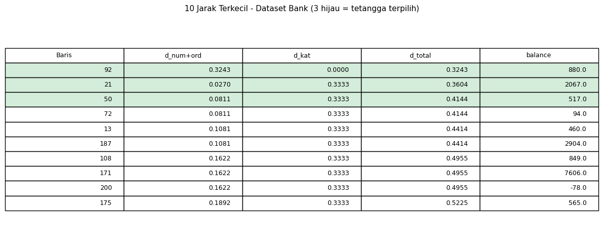
Penjelasan:
Tabel menampilkan 10 baris dengan jarak terkecil dari baris 5 (yang memiliki missing value
balance).Jarak dihitung menggunakan jarak campuran (mixed-type distance):
Numerik + Ordinal (Euclidean): kolom
age(dinormalisasi Min-Max) daneducation(dikonversi ordinal)Kategorikal (ketidaksamaan): kolom
marital,housing,loan\(d_{total} = d_{num+ord} + d_{kat}\)
3 baris teratas (hijau) adalah tetangga terdekat yang terpilih (k = 3):
Peringkat |
Baris |
\(d_{num+ord}\) |
\(d_{kat}\) |
\(d_{total}\) |
balance |
|---|---|---|---|---|---|
1 |
Baris 92 |
0.3243 |
0.0000 |
0.3243 |
880 |
2 |
Baris 21 |
0.0270 |
0.3333 |
0.3604 |
2067 |
3 |
Baris 50 |
0.0811 |
0.3333 |
0.4144 |
517 |
Catatan: Indeks baris (92, 21, 50) adalah indeks setelah dilakukan filter
education ∈ {primary, secondary, tertiary}danreset_index(drop=True)pada kode Python. Pada perhitungan manual di bagian 14.5–14.6, digunakan indeks asli dari file CSV (96, 21, 51) yang merujuk pada baris data yang sama — hanya indeksnya yang berbeda karena perbedaan urutan setelah filter.
14.12 Bukti Hasil Imputasi KNN — Bank#
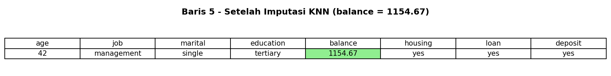
Penjelasan:
Setelah KNN Imputation dilakukan, kolom
balancepada baris 5 terisi dengan nilai 1154.67.Nilai ini merupakan rata-rata dari
balanceketiga tetangga terdekat:
Data baris 5 setelah imputasi:
age |
job |
marital |
education |
balance |
housing |
loan |
deposit |
|---|---|---|---|---|---|---|---|
42 |
management |
single |
tertiary |
1154.67 |
yes |
yes |
yes |
Nilai asli sebelum dihilangkan: 0.
Ini membuktikan bahwa proses KNN Imputation pada data campuran berhasil mengisi missing value dengan mempertimbangkan jarak numerik, ordinal, dan kategorikal secara bersamaan.
15) Ringkasan Langkah KNN Imputation#
15.1 Untuk Data Numerik (Iris)#
1. Cek missing value → tidak ada → buat missing value buatan
2. Tentukan baris target dan kolom yang kosong
3. Hitung jarak Euclidean ke semua baris lain (tanpa kolom yang kosong)
4. Urutkan jarak dari terkecil
5. Ambil k=3 tetangga terdekat
6. Isi missing value = rata-rata nilai kolom target dari 3 tetangga
15.2 Untuk Data Campuran (Bank)#
1. Cek missing value → tidak ada → buat missing value buatan
2. Tentukan tipe setiap kolom: numerik, ordinal, atau kategorikal
3. Konversi ordinal ke numerik dengan rumus z = (r-1)/(m-1)
4. Normalisasi kolom numerik dengan Min-Max Scaling
5. Hitung jarak numerik+ordinal menggunakan Euclidean
6. Hitung jarak kategorikal menggunakan (P-M)/P
7. Jumlahkan: d_total = d_num+ord + d_kat
8. Urutkan jarak dari terkecil
9. Ambil k=3 tetangga terdekat
10. Isi missing value = rata-rata nilai target dari 3 tetangga (KNN Regression)
16) Cara Menghitung Jarak Total dengan Excel#
Selain menggunakan Python, perhitungan jarak KNN juga dapat dilakukan menggunakan Microsoft Excel. Berikut panduan langkah demi langkah untuk kedua dataset (Iris dan Bank).
16.1 Perhitungan Jarak Euclidean — Dataset Iris (di Excel)#
Langkah 1: Siapkan Data#
Buat tabel di Excel dengan kolom:
A |
B |
C |
D |
E |
|
|---|---|---|---|---|---|
1 |
Baris |
sepal_length |
sepal_width |
petal_length |
petal_width |
2 |
0 |
5.1 |
3.5 |
1.4 |
0.2 |
3 |
1 |
4.9 |
3.0 |
1.4 |
0.2 |
4 |
… |
… |
… |
… |
… |
7 |
5 (target) |
5.4 |
3.9 |
1.7 |
NaN |
Langkah 2: Hitung Jarak Euclidean (tanpa kolom petal_width)#
Karena petal_width (kolom E) missing pada baris 5, jarak hanya dihitung dari 3 kolom: B, C, D.
Di kolom baru (misal F), masukkan rumus untuk setiap baris (contoh baris 2 = baris data ke-0):
=SQRT((B$7-B2)^2 + (C$7-C2)^2 + (D$7-D2)^2)
Penjelasan rumus:
B$7=sepal_lengthbaris target (5.4) — tanda$mengunci baris 7 agar tidak bergeser saat di-copy ke bawahB2=sepal_lengthbaris yang sedang dibandingkanSQRT(...)= akar kuadrat (√) untuk Euclidean distance
Langkah 3: Copy rumus ke bawah#
Drag rumus dari F2 ke bawah sampai semua baris (kecuali baris target sendiri). Excel akan otomatis menghitung jarak ke setiap baris.
Langkah 4: Urutkan dan Ambil 3 Terkecil#
Pilih seluruh data termasuk kolom jarak
Klik Data → Sort → Sort by kolom F (Jarak) → Smallest to Largest
Ambil 3 baris teratas — itulah 3 tetangga terdekat
Langkah 5: Hitung Rata-Rata (Imputasi)#
Di sel terpisah, hitung rata-rata petal_width dari 3 tetangga:
=AVERAGE(E_tetangga1, E_tetangga2, E_tetangga3)
Contoh jika 3 tetangga ada di baris 2, 5, 8:
=AVERAGE(E2, E5, E8)
Hasil yang diharapkan: 0.2333
16.2 Perhitungan Jarak Campuran — Dataset Bank (di Excel)#
Untuk data campuran, perhitungan lebih kompleks karena melibatkan 3 komponen: numerik, ordinal, dan kategorikal.
Langkah 1: Siapkan Data Bank#
Buat tabel dengan kolom yang relevan:
A |
B |
C |
D |
E |
F |
|
|---|---|---|---|---|---|---|
1 |
Baris |
age |
education |
marital |
housing |
loan |
2 |
0 |
30 |
secondary |
married |
yes |
no |
3 |
1 |
33 |
secondary |
married |
yes |
no |
4 |
… |
… |
… |
… |
… |
… |
Tambahkan juga kolom balance (kolom G) untuk nanti diambil nilainya dari tetangga.
Baris target (baris 5): age=42, education=tertiary, marital=single, housing=yes, loan=yes, balance=?
Langkah 2: Konversi Ordinal (education) ke Numerik#
Buat kolom bantu H untuk konversi education:
=IF(C2="primary",0, IF(C2="secondary",0.5, IF(C2="tertiary",1, "")))
Rumus ini menerapkan: \(z = (r-1)/(m-1)\)
education |
Hasil |
|---|---|
primary |
0 |
secondary |
0.5 |
tertiary |
1.0 |
Langkah 3: Normalisasi Age (Min-Max)#
Buat kolom bantu I untuk normalisasi age:
=( B2 - MIN(B$2:B$240) ) / ( MAX(B$2:B$240) - MIN(B$2:B$240) )
Rumus ini menerapkan: \(x' = \frac{x - x_{min}}{x_{max} - x_{min}}\)
Contoh: age=42 → \((42-23)/(60-23) = 19/37 = 0.5135\)
Langkah 4: Hitung Jarak Numerik + Ordinal (Euclidean)#
Buat kolom J untuk \(d_{num+ord}\):
=SQRT( (I$7-I2)^2 + (H$7-H2)^2 )
Di mana:
I$7= age_normalized baris targetH$7= education_normalized baris targetI2,H2= nilai baris yang dibandingkan
Langkah 5: Hitung Jarak Kategorikal#
Buat 3 kolom bantu untuk pencocokan kategorikal (misal K, L, M):
Kolom K (marital sama?):
=IF(D2=D$7, 1, 0)
Kolom L (housing sama?):
=IF(E2=E$7, 1, 0)
Kolom M (loan sama?):
=IF(F2=F$7, 1, 0)
Lalu buat kolom N untuk \(d_{kat}\):
=(3 - (K2+L2+M2)) / 3
Rumus ini menerapkan: \(d_{kat} = \frac{P - M}{P}\) di mana \(P = 3\) kolom kategorikal.
Langkah 6: Hitung Jarak Total#
Buat kolom O untuk \(d_{total}\):
=J2 + N2
Ini menerapkan: \(d_{total} = d_{num+ord} + d_{kat}\)
Langkah 7: Urutkan dan Ambil 3 Terkecil#
Pilih seluruh data
Data → Sort by kolom O (d_total) → Smallest to Largest
Ambil 3 baris teratas sebagai tetangga terdekat
Langkah 8: Hitung Rata-Rata Balance (Imputasi)#
=AVERAGE(G_tetangga1, G_tetangga2, G_tetangga3)
Hasil yang diharapkan: 1154.67
16.3 Ringkasan Rumus Excel#
Komponen |
Rumus Excel |
Penjelasan |
|---|---|---|
Euclidean Distance (Iris) |
|
Jarak 3 kolom numerik |
Konversi Ordinal |
|
\(z=(r-1)/(m-1)\) |
Normalisasi Min-Max |
|
Skala 0–1 |
Jarak Num+Ord |
|
Euclidean pada kolom numerik + ordinal |
Pencocokan Kategorikal |
|
1 jika sama, 0 jika beda |
Jarak Kategorikal |
|
\((P-M)/P\) |
Jarak Total |
|
\(d_{num+ord} + d_{kat}\) |
Imputasi (rata-rata) |
|
Rata-rata k tetangga terdekat |
16.4 Tips Penting di Excel#
Gunakan
$(absolute reference) pada sel baris target agar rumus tidak bergeser saat di-copy ke bawah. Contoh:B$7mengunci baris 7.Filter dulu baris yang
educationbukanprimary/secondary/tertiary(jika ada) sebelum menghitung.Jangan ikutkan baris target dalam perhitungan jarak (jarak ke diri sendiri = 0, tidak bermakna).
Gunakan Conditional Formatting untuk mewarnai 3 jarak terkecil secara otomatis:
Pilih kolom jarak → Home → Conditional Formatting → Top/Bottom Rules → Top 10 Items → ubah ke 3 → pilih warna hijau.
Untuk dataset besar, gunakan fungsi SMALL() untuk menemukan jarak terkecil tanpa perlu sort:
=SMALL(O2:O240, 1)→ jarak terkecil ke-1=SMALL(O2:O240, 2)→ jarak terkecil ke-2=SMALL(O2:O240, 3)→ jarak terkecil ke-3
Gunakan INDEX-MATCH untuk menemukan baris mana yang memiliki jarak tersebut:
=INDEX(A2:A240, MATCH(SMALL(O2:O240,1), O2:O240, 0))→ nomor baris tetangga ke-1
17) Kesimpulan#
Dataset Iris termasuk data numerik, sehingga missing value dapat diimputasi langsung menggunakan Euclidean distance → hasilnya:
petal_width = 0.2333Dataset Bank merupakan data campuran, sehingga:
Data ordinal (
education) harus diubah menjadi numerik terlebih dahulu menggunakan rumus \(z = (r-1)/(m-1)\)Data kategorikal (
marital,housing,loan) dihitung menggunakan rasio ketidaksamaan \((P-M)/P\)Jarak total = jarak numerik/ordinal + jarak kategorikal
Hasilnya:
balance = 1154.67
Jika ada missing value pada satu kolom, maka kolom tersebut tidak diikutkan dalam perhitungan jarak
Setelah semua jarak dihitung, dipilih k = 3 tetangga terdekat
Karena nilai yang diisi berupa numerik, maka digunakan KNN Regression (rata-rata dari tetangga terdekat)
Perhitungan KNN Imputation dapat dilakukan dengan 3 cara: perhitungan manual (tulisan), kode Python, atau Microsoft Excel — ketiganya menghasilkan hasil yang sama